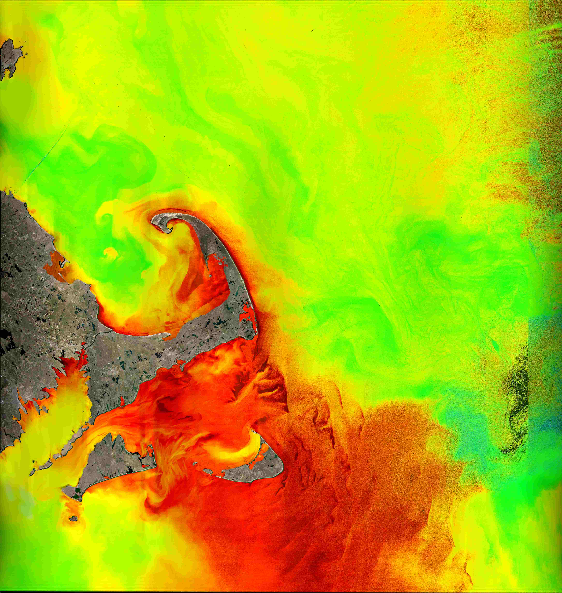
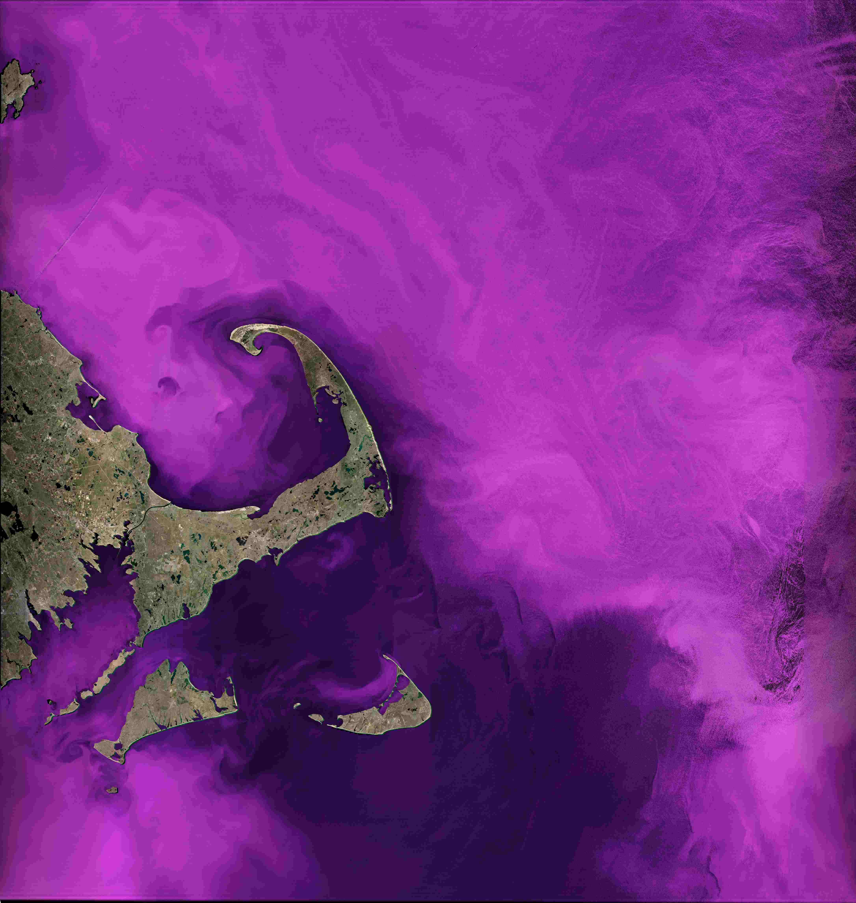
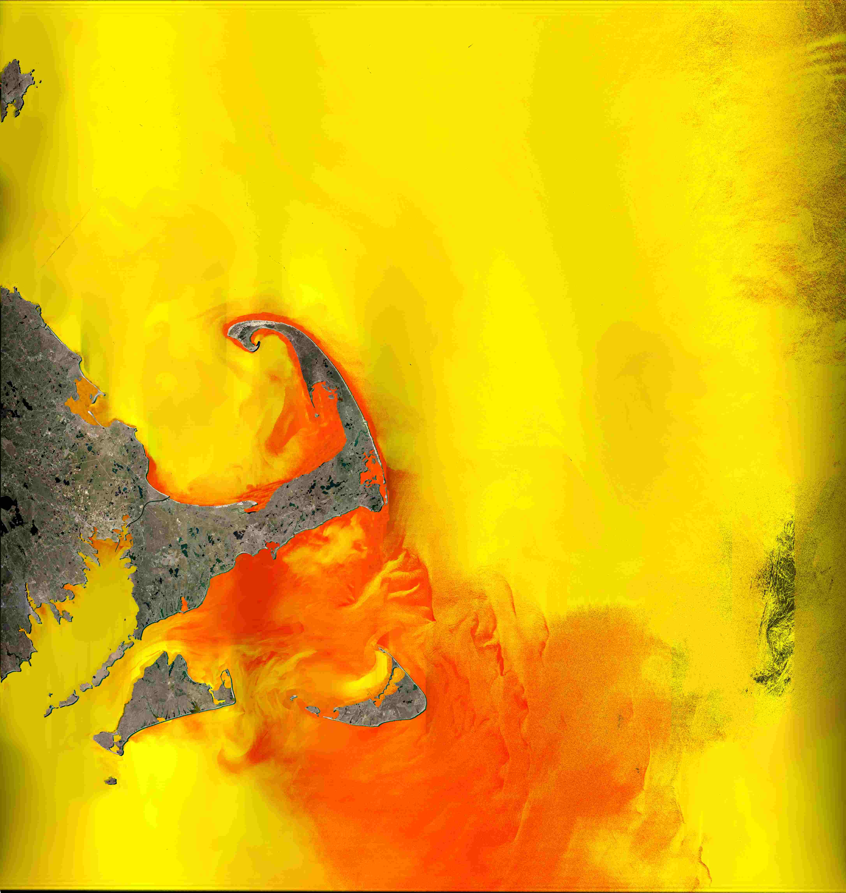
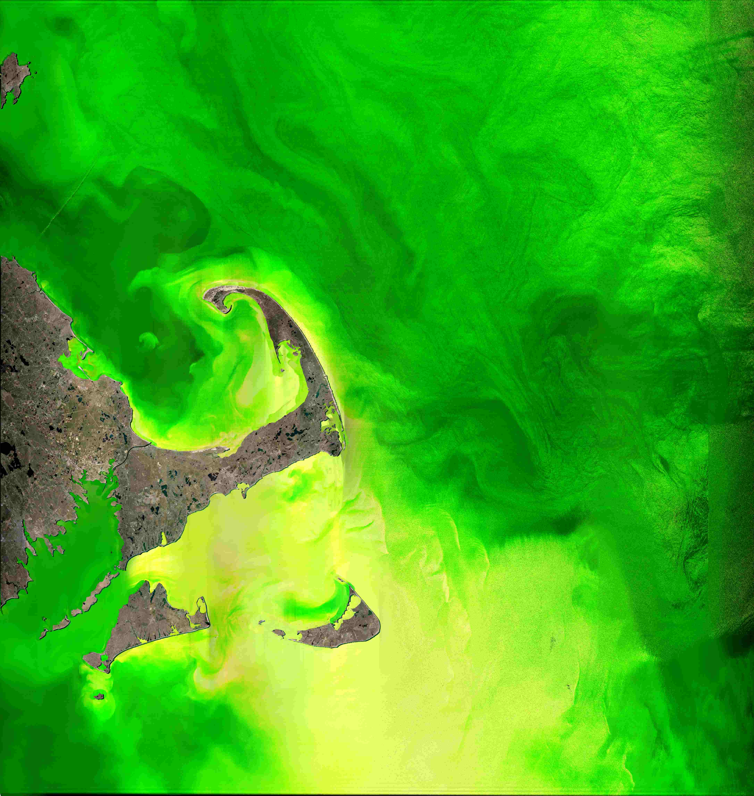
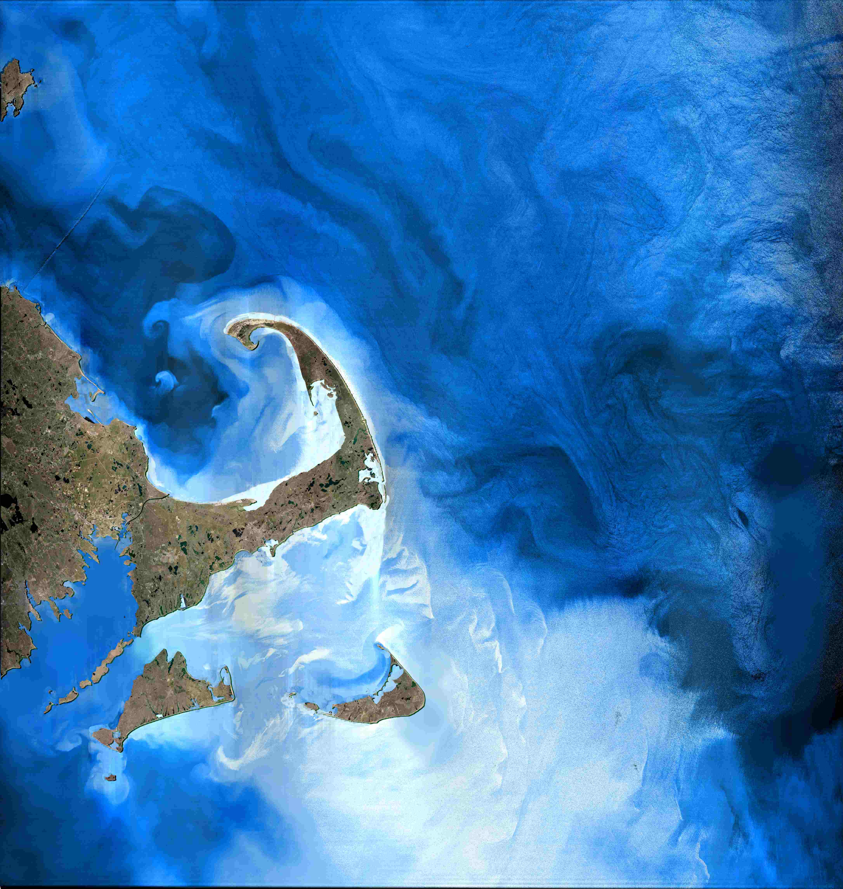

I am an undergraduate at the Massachusetts Institute of Technology studying Computer Science and Engineering. Currently, I'm working with MIT Sea Grant on satellite image processing. I am interested in algorithms, machine learning, and software engineering.
This summer, I'm transforming raw satellite data into image visualizations of various biomolecule concentrations in the Stellwagen Bank national marine sanctuary. To do this, I am using algorithms in SeaDAS and MATLAB, and I am also writing Python scripts to analyze concentrations over time. Below is a sample of some images I generated for April 23rd, 2018.

Chlorophyll a

Diatoms

Dinoflagellites

Green Algae

Prymneslophytes
I built this website to serve as a personal portfolio and to learn HTML, CSS, and JavaScript. Check out the GitHub repository here.
In the three project-based programming courses that I have taken so far, I have developed a deep understanding of algorithmic techniques, data structures, computer environments, and best style practices. Through involved coding labs such as an n-dimensional minesweeper, a Python LISP interpreter, a file sequence downloader, a route planner, and a climate change modeling system, I have become skilled at software design, construction, and implementation of design.